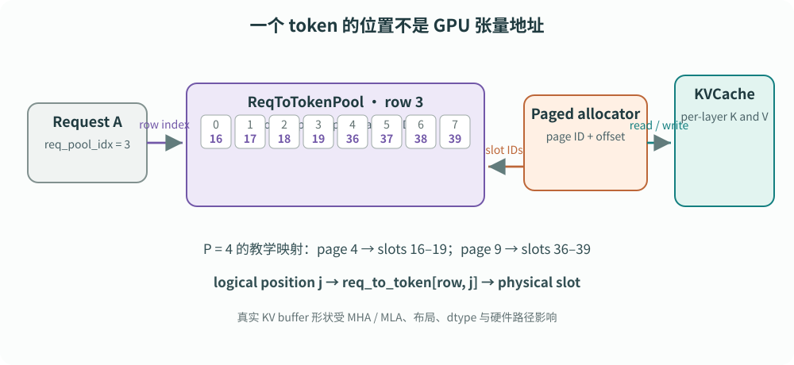
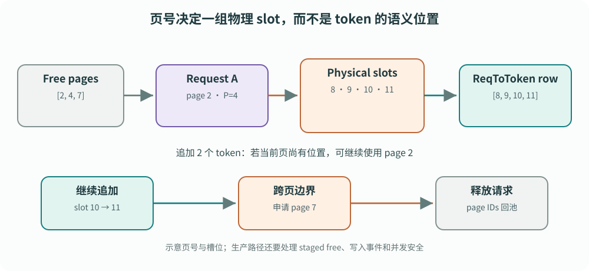

第 06 章 · 内存管理
KV Pool 深入：从请求行到物理页，再到每层 K/V 张量
把“KV Cache”拆成三种不同的索引与存储职责：请求表、物理页分配器和模型层缓存。
KV Cache 常被画成一块 GPU 显存，仿佛请求只要知道 token 数量，就能直接读写 K/V。真实 serving runtime 必须回答三个不同问题：一个请求的逻辑 token 位于哪一行？该位置映射到哪个物理 slot？这个 slot 在每一层的 Key/Value 张量中又在哪里？把这三层混成一个地址，是理解内存 bug、页复用和 attention metadata 时最常见的障碍。
读完本章，你应该能
- 区分 ReqToTokenPool 的请求行与 TokenToKVPool 的物理 KV 存储。
- 推导 page ID、page offset 与 physical slot 的关系。
- 理解 alloc_extend、alloc_decode、free 与 staged page reuse 的职责。
1. 先拆开三个对象：请求表、allocator、KV tensor
在当前源码快照中，ReqToTokenPool 的注释明确写出它把 request 映射到 token locations。其核心表 req_to_token 是一个二维整数张量：第一维由 req_pool_idx 选择请求行，第二维表示该请求的逻辑 token 位置；表格单元存的是物理 KV slot ID，而不是 token 本身，也不是 K/V 向量。
PagedTokenToKVPoolAllocator 负责给出可用物理 slot。KVCache / MHATokenToKVPool 则拥有每层 K/V buffer，并提供读写接口。换句话说：请求表解决“在哪里”，allocator 解决“分配哪个槽”，KV pool 解决“数据放在哪个张量”。

2. 从 page ID 计算物理 slot：页内偏移才是关键
用 page size P 表示一页能容纳的 token slot 数。一个物理页 p 对应连续的 slot 区间；页内第 o 个位置的 slot ID 可写成：
反过来，page_id = floor(slot/P)，offset = slot mod P。例如 P=4，page 4 对应 16–19，page 9 对应 36–39。它们在物理地址空间上并不相邻，但可以在同一请求的逻辑序列中连续出现；req_to_token 表负责把两者串起来。
若一个独立序列有 T 个 token，按完整页分配时页数为：
这是单序列、完整页分配的教学模型。真实系统还可能共享 prefix page、使用 sliding-window 子池或不同 id space，因此不能直接用这个尾页空槽数推断整台 GPU 的碎片率。
3. allocator 的三种操作：alloc、extend、decode
当前 PagedTokenToKVPoolAllocator.alloc() 从 free page IDs 中取整页，再把页号展开成 slot IDs；alloc_extend() 接收 prefix length、sequence length、last location 和待扩展 token 数，处理现有页尾部与新页的组合；alloc_decode() 则为活跃请求分配下一位置，并可在特定调用路径中融合写入 req_to_token。
这也解释了为什么 Prefill 扩展和 Decode 追加不完全是同一个分配操作：Prefill 一次可能新增多个 token，Decode 通常为每个活跃序列追加一个位置。是否能直接复用当前页剩余 slot，取决于 prefix/sequence 的页内位置。

4. Free 不只是把数字塞回列表：还要避免过早复用
在 allocator 的释放实现 中，free index 会先转换成 page IDs；调试路径会检查重复页。部分路径将释放页放入 staged pages，直到分配压力触发 merge/sort；如果存在 reuse guard event，allocator 会在合并前等待先前 KV 写入完成。
这是一个重要的并发正确性约束：请求生命周期已结束，不代表 GPU stream 上所有写入都已完成。若物理页被新请求过早复用，旧写入就可能污染新请求的 KV。页面生命周期必须与设备执行顺序、传输和 allocator 状态协调。
职责边界：allocator 负责页槽位回收；RadixCache 决定某段共享 KV 是否仍被请求引用或可淘汰。缓存树不能绕过 allocator 的释放规则。
5. CPU 实验：亲手构造请求行与物理页映射
仓库中的 examples/page_allocator.py 是一个纯 Python 教学模型：它保留 page ID、slot ID 和 request row 的映射关系，不调用 CUDA，也不声称复刻 SGLang 的完整 allocator。你可以运行它观察一个请求跨页追加、释放和页复用。
python3 examples/page_allocator.py
# 预期核心映射（P=4 的 toy allocator）：
# page 2 -> slots [8, 9, 10, 11]
# page 7 -> slots [28, 29, 30, 31]
# request row stores physical slot IDs, not token values重点观察：请求逻辑位置 4 不必映射到物理 slot 12；它可以映射到另一个物理页中的 slot 28。逻辑连续性由请求表表达，物理连续性不是必要条件。
6. 对照当前源码：建议按这个顺序阅读
ReqToTokenPool：请求行申请、写入与释放。BaseTokenToKVPoolAllocator：统一 allocator 接口与容量 hook。PagedTokenToKVPoolAllocator：页申请、extend、decode。MHATokenToKVPool：K/V buffer 及布局初始化。set_kv_buffer：将计算得到的 K/V 写入 slot。
这些对象并不是一个类的不同别名。沿着调用关系读，才能理解 request table、物理分配与 kernel 写入之间的契约。
7. 交互：选择你正在追踪的那一层
切换对象，检查它回答的问题是什么；这有助于定位 OOM、重复释放和 KV 地址错误。
三层对象的职责
Request row：req_pool_idx 选择请求行；行中的第 j 列记录该请求逻辑 token 位置所对应的物理 slot ID。
Physical page：allocator 管理 free page IDs；slot ID 由 page ID 与 page offset 展开，扩展时处理当前页尾部和新页。
KV tensor：KVCache 在模型各层持有 K/V buffer；attention backend 按 metadata 读取或写入这些 slot。
8. 不能忽略的实现差异
图中的 K/V 双 buffer 是 MHA 教学视角。当前源码还包含 MLA pool、FP4/FP8 KV 量化、NHD/HND/vectorized-5D 等物理布局、sliding-window pool、统一内存与 host offload 等路径。不能将一个 buffer shape 或 allocator 类的行为推广到所有模型架构与硬件。
理论 KV bytes 也不等于 GPU 总显存。模型权重、激活、CUDA Graph、临时 workspace、通信缓冲和 allocator 元数据都可能占用额外内存。下一章将把“物理页的 owner”与“共享前缀的索引 owner”彻底区分：RadixCache 如何管理节点。
参考资料与版本边界
实现级描述以 sgl-project/sglang@6a4e10a0ee643dfbe5f59a98b60293bc11fc1bdd 为快照（2026-11-23 核查）。源码 main 后续会变化；新版本需要重新核对调用路径、默认配置和兼容矩阵。图中页号、chunk 数值和概率向量均为 toy/derived，不是性能测量。